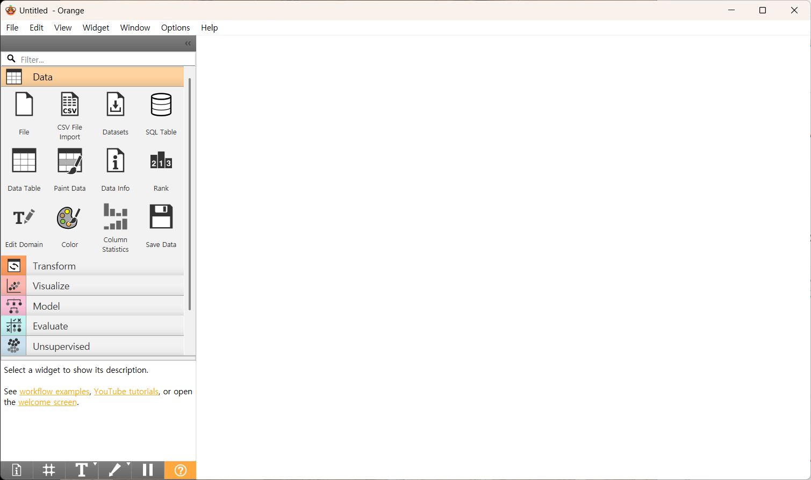
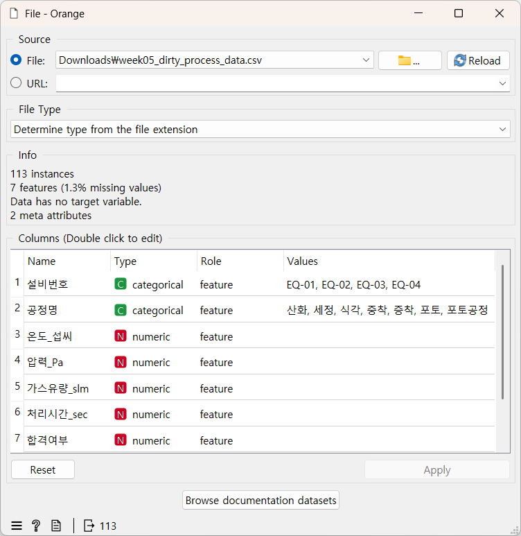
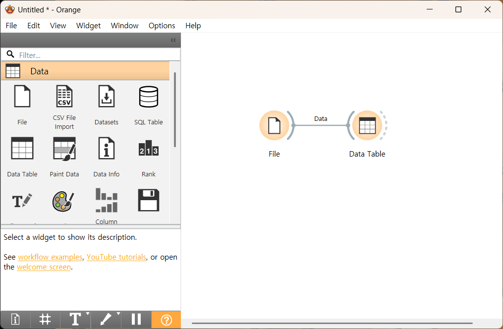
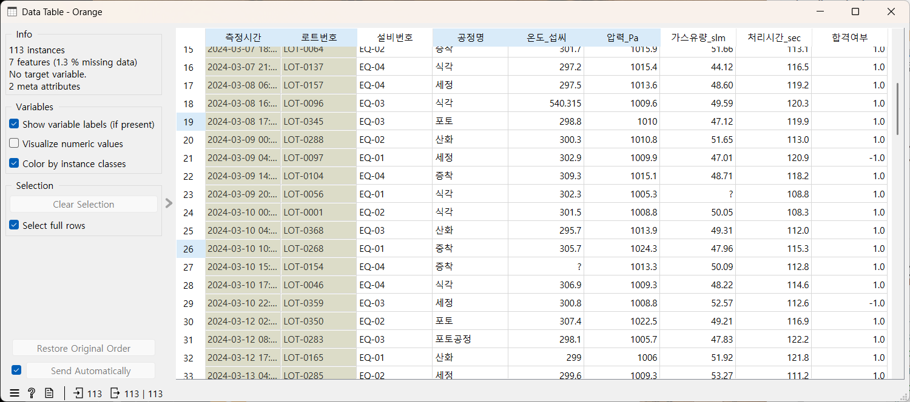

Orange3 시작하기
이 부록으로 확인할 질문: "코드 없이 마우스만으로 데이터를 살펴보려면 Orange3를 어떻게 쓰면 될까?"
이 부록으로 할 수 있는 것
- Orange3가 무엇이고 이 과정에서 왜 쓰는지 한 문장으로 설명할 수 있다.
- Orange 파일(
.ows)을 열고,_start와_done의 차이를 안다. - 위젯을 캔버스에 놓고 서로 연결해 워크플로를 만들 수 있다.
- File 위젯이 데이터 파일을 못 찾을 때 스스로 해결할 수 있다.
- 1~10차시에서 쓰는 위젯이 위젯 목록의 어느 묶음에 있고, 각각 무엇을 보여 주는지 찾아볼 수 있다.
언제 보면 좋은가: 1차시 PART 2(Orange3)를 시작하기 전에 한 번 훑어보고, 이후 차시에서 새 위젯이 나올 때마다 그 위젯 설명만 다시 찾아보면 된다.
Orange3란 무엇인가
이 과정에서 Orange3는 1차시부터 매 차시 쓰는 본 활동이다. 1~8차시는 PART 1에서 파이썬으로 배운 것을 PART 2 Orange3에서 다른 데이터와 더 넓은 화면으로 넓혀 보고, 9·10차시는 순서를 바꿔 PART 1에서 Orange3로 모델을 먼저 눈으로 본 뒤 PART 2에서 파이썬 몇 줄로 확인한다. Orange 실습은 언제나 워밍업 데이터 → 반도체 데이터 순서다.
엑셀·Orange3·파이썬은 모두 데이터를 다루는 도구지만, 잘하는 일이 조금씩 다르다.
| 도구 | 사용 방법 | 잘하는 일 | 이 과정에서의 역할 |
|---|---|---|---|
| 엑셀 | 셀에 직접 입력·수식 | 작은 표 정리, 간단한 합계 | 익숙한 비교 대상 |
| Orange3 | 위젯을 마우스로 연결 | 코드 없이 빠르게 그래프·모델 확인 | 파이썬에서 배운 것을 넓혀 보기, 파이썬 결과와 비교하기 |
| 파이썬 | 코드 작성 | 정확한 계산, 반복 작업 자동화 | 숫자로 직접 계산하기 |
실행하기
실습 파일(.ows) 열기
Orange에서 만든 워크플로는 .ows 파일로 저장된다. 차시마다 이 파일이 4개 있다.
| 파일 이름 예(1차시) | 무엇인가 | 언제 여는가 |
|---|---|---|
week01_1_town_start.ows | ① 워밍업 데이터 시작 파일 — 데이터가 연결된 File 위젯 하나와 한국어 안내 메모 | PART 2(9·10차시는 PART 1) Orange 실습을 시작할 때 |
week01_1_town_done.ows | ① 워밍업 완성본 — 위젯이 모두 연결된 상태 | 막혔을 때 따라잡기, 끝난 뒤 내 것과 비교 |
week01_2_process_start.ows | ② 반도체 데이터 시작 파일 | 워밍업이 끝난 뒤 |
week01_2_process_done.ows | ② 반도체 데이터 완성본 | 막혔을 때 따라잡기 |
week01_1_town_start.ows를
더블클릭한다. Orange가 열리며 캔버스에 File 위젯 하나와 안내 메모가 보인다.week01_orange_town_population.tab)이 보이고, 아래 Info 칸에 행 수(instances)가 나오면 성공이다.orange 폴더의 .tab 파일이다. 같은 차시 CSV와
값은 같고, 열마다 Orange가 쓸 종류(숫자·범주·결과 열·참고용 meta)가 미리 정해져 있다. 예를 들어 합격여부는
결과 열(target)로 정해져 있어 Orange가 합격·불합격 막대를 바로 그리고, 9·10차시 모델도 따로 설정하지 않고 바로 만든다.
File 위젯이 파일을 못 찾을 때
File 위젯 창에 빨간 글씨(File not found 등)가 보이거나 파일 이름이 빨간색이면, Orange가 데이터 파일을
찾지 못한 것이다. .ows는 자기가 있는 폴더를 기준으로 데이터를 찾아가므로, 파일을 다른 곳으로 옮기면
길을 잃는다. 아래 순서로 확인한다.
.ows를 바탕화면 등 다른 곳으로 옮기거나 복사했다면,
원래 폴더에 있는 .ows를 다시 연다.orange 폴더의 .tab 파일을 고른다. 같은 이름의 CSV가 아니라
orange 폴더 안의 .tab을 고른다. 고르면 뒤에 연결된 위젯에 바로 데이터가 흐른다.Ctrl+S(Mac은 Cmd+S)로 저장하면 Orange가 데이터 위치를 내 컴퓨터 기준으로
바꿔 저장할 수 있다. 그 컴퓨터에서는 계속 열리지만, 폴더를 옮기면 다시 이 오류가 난다. 막히면
_start.ows나 _done.ows를 다시 열면 된다.
기본 화면 구성
Orange3를 실행하면 아래 영역으로 이루어진 화면이 열린다.

위젯 목록
- 한 줄 설명
- 화면 왼쪽에 있는, 묶음(Data·Transform·Visualize 등)별로 모인 위젯 아이콘 모음.
- 쉬운 비유
- 요리 재료를 종류별로 정리해 둔 부엌 선반.
- 자주 하는 오해
- 아이콘을 한 번 클릭하면 바로 켜진다고 생각하기 쉽지만, 먼저 캔버스로 드래그해 놓아야 한다.
캔버스
- 한 줄 설명
- 위젯을 배치하고 서로 연결해 "작업 흐름(워크플로)"을 만드는 큰 작업 공간.
- 쉬운 비유
- 여러 재료(위젯)를 순서대로 늘어놓고 화살표로 조리 순서를 표시한 레시피 판.
- 자주 하는 오해
- 위젯을 캔버스에 놓기만 하면 자동으로 연결된다고 생각하기 쉽지만, 직접 선으로 이어줘야 데이터가 흐른다.
위젯 연결선
- 한 줄 설명
- 한 위젯의 결과(출력)를 다음 위젯의 입력으로 전달하는 화살표.
- 쉬운 비유
- 공정 라인의 컨베이어 벨트 — 앞 설비의 결과물이 다음 설비로 그대로 넘어간다.
- 자주 하는 오해
- 선이 하나라도 빠지면 뒤 위젯은 아무 데이터도 받지 못해 빈 화면만 보인다. 위젯 사이에 화살표가 그려져 있는지 항상 확인한다.
실습: 첫 워크플로 직접 만들어 보기
수업에서는 _start.ows에 File 위젯이 이미 들어 있지만, 빈 캔버스에서 한 번 직접 만들어 보면 File 위젯이
파일을 못 찾을 때도 당황하지 않는다. 5차시 데이터로 연습해 보자.
Data 묶음에서
File 아이콘을 캔버스로 끌어다 놓는다.week05_dirty_process_data.tab을 선택한다.
.tab 파일은 이 값이 미리 정해져 있으니 바꾸지 않고 그대로 둔다. 합격여부는 이미 target·categorical이다.
Data 묶음에서
Data Table 위젯을 캔버스로 끌어다 놓는다.

위젯은 어느 묶음에 있나
위젯 목록은 묶음별로 접혀 있다. 아래 표에서 묶음 이름을 찾아 펼친 뒤 위젯을 끌어다 놓는다. 위젯 이름은 Orange 화면에 나오는 영어 이름 그대로다.
| 묶음 | 이 과정에서 쓰는 위젯 | 쓰는 차시 |
|---|---|---|
| Data | File · Data Table · Column Statistics | 1~10 · 1~10 · 2·5 |
| Transform | Select Rows · Select Columns · Impute · Pivot Table | 3·4·5 · 4 · 5 · 7 |
| Visualize | Distributions · Scatter Plot · Box Plot · Tree Viewer | 1·6·7·9 · 6·8 · 6·7 · 9 |
| Unsupervised | Correlations | 8 |
| Model | Tree · kNN · Logistic Regression | 9·10 · 10 · 10 |
| Evaluate | Test and Score · Confusion Matrix · Predictions | 9·10 · 9 · 10 |
위젯 사전 — 이 과정에서 쓰는 위젯
아래 위젯은 처음 쓰는 차시 순서대로 정리했다. 그 차시에 도착하면 이 절을 다시 펼쳐 찾아봐도 좋다.
File — 1~10차시 (Data)
_start.ows에는 이미 데이터가 연결되어 있다. 직접 고를 때는 더블클릭 → 폴더 아이콘 →
orange 폴더의 .tab.Data Table — 1차시 (Data)
Distributions — 1차시 (Visualize)
Column Statistics — 2·5차시 (Data)
Select Rows — 3·4·5차시 (Transform)
if나
Pandas 조건 검색과 같은 일을 한다. 조건 열이 빈칸인 행은 조건과 상관없이 버려진다는 점에 주의한다.Select Columns — 4차시 (Transform)
df[["열1", "열2"]])과 같은 일이다.Impute — 5차시 (Transform)
dropna()로 지운 결과와 평균이 어떻게 달라지는지 비교한다.Scatter Plot — 6·8차시 (Visualize)
Box Plot — 6·7차시 (Visualize)
Pivot Table — 7차시 (Transform)
groupby 결과와 같은지 비교한다.Correlations — 8차시 (Unsupervised)
Tree · Tree Viewer — 9차시 (Model · Visualize)
.tab을 연결하면 나머지 feature 열로 모델을 만든다. 파이썬의
DecisionTreeClassifier와 같은 원리다. Tree Viewer에 연결하면 모델이 어떤 질문으로 나눴는지 나무 그림으로 보여준다.Test and Score · Confusion Matrix — 9·10차시 (Evaluate)
kNN · Logistic Regression — 10차시 (Model)
Predictions — 10차시 (Evaluate)
model.predict()와 같은 역할이고,
확률은 이 표에서만 본다.차시별 사용 위젯 한눈에 보기
| 차시 | 워밍업 데이터 → 반도체 데이터 | 새로 쓰는 위젯 |
|---|---|---|
| 1차시 | 우리 동네 인구 → 공정 기록 | File · Data Table · Distributions |
| 2차시 | 지하철 역별 승하차 → 설비 온도 | Column Statistics |
| 3차시 | 우리 동네 대기환경 → 기록 30건 | Select Rows |
| 4차시 | 반도체 8대 공정 흐름표 → 공정 기록 100건 | Select Columns (+ Select Rows, Data Table 정렬) |
| 5차시 | 클린룸 환경 모니터링 → 지저분한 공정 기록 | Impute (+ Column Statistics, Select Rows) |
| 6차시 | 웨이퍼 맵 한 장 → 공정 기록 180건 | Scatter Plot · Box Plot (+ Distributions) |
| 7차시 | 식각 설비 3대의 웨이퍼 12장 → 설비·수율 | Pivot Table (+ Distributions 분할, Box Plot 그룹) |
| 8차시 | 식각 챔버 센서 기록 → 이상·원인 후보 | Correlations (+ Scatter Plot) |
| 9차시 | 웨이퍼 맵 패턴 분류 → 합격/불합격 학습 데이터 | Tree · Tree Viewer · Test and Score · Confusion Matrix |
| 10차시 | 웨이퍼 패턴 + 새 웨이퍼 10장 → 새 로트 9개 | kNN · Logistic Regression · Predictions |
문제 해결 (Troubleshooting)
Box Plot)을 입력한 뒤 Enter를 누르면 그 자리에 위젯이 놓인다.
.tab은
처음부터 그렇게 정해져 있으므로, 바뀌어 있다면 누군가 직접 고친 것이다. _start.ows를 다시 열면 된다.
Type이 numeric이면 Orange3는 합격/불합격 분류가 아니라 숫자 맞히기(회귀)로 처리한다.
_done.ows를 열어 비교한다.